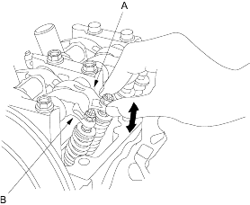
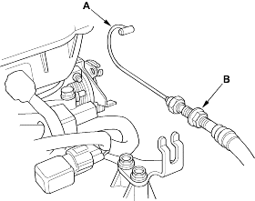

- Loosen the valve on the regulator and apply the specified air pressure:
Specified Air Pressure:
250 kPa (2.5 kgf/cm2, 36 psi)
NOTE: If the synchronising piston does not move after applying air pressure, move the primary or secondary rocker arm up and down manually by rotating the crankshaft counter-clockwise.
- Move the intake secondary rocker arm (A) for the No. 1 cylinder. The primary rocker arm (B) and secondary rocker arm should move together.
- If the intake primary rocker arm does not move, remove the primary and secondary rocker arms as an assembly and check that the piston in the secondary and primary rocker arms move smoothly. If any rocker arm needs replacing, replace the primary and secondary rocker arms as an assembly and retest.

- Remove the special tools.
- After inspection, check that the MIL does not come on.
NOTE:
- Use fender covers to avoid damaging painted surfaces.
- To avoid damage, unplug the wiring connectors carefully while holding the connector portion.
- To avoid damaging the cylinder head, wait until the engine coolant temperature drops below 38oC (100oF) before loosening the cylinder head bolts.
- Mark all wiring and hoses to avoid misconnection. Also, be sure that they do not contact other wiring or hoses, or interfere with other parts.
- Make sure you have the anti-theft code for the radio, then write down the frequencies for the radio's preset buttons.
- Disconnect the battery negative terminal.
- Drain the engine coolant, refer to the '01 Civic Shop manual on this CD (see page 10-8).
- Remove the throttle cable (A) by loosening the locknut (B), then slipping the cable end out of the accelerator linkage. Take care not to bend the cable when removing it. Always replace any kinked cable with a new one.
